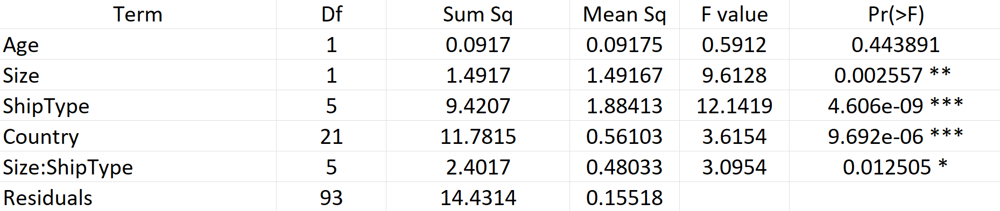
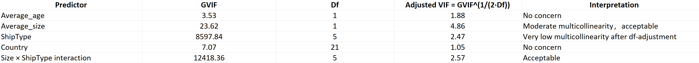
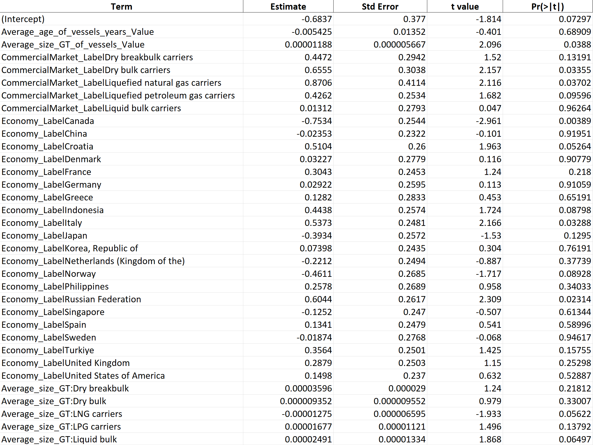

Why Do Some Ships Stay Longer? A Cross-Country, Ship-Type Analysis of Median Port Time
1 Abstract
This study examines why median port times differ across countries and commercial market segments by analyzing vessel-arrival data from UNCTAD’s Port Call and Performance Statistics. Since port stays are highly right-skewed, the response variable, median time in port, was log-transformed to improve the distribution. Several linear regression models were used to see how vessel characteristics, ship-type categories, country indicators, and interaction terms explain differences in log median port time.
Comparing models with AIC, adjusted R², and nested F-tests showed that including vessel size, vessel age, ship type, country fixed effects, and a size-by-ship-type interaction gave the best mix of clarity and fit. The results show that larger vessels tend to have longer median port times, while vessel age does not have a clear effect. Ship-type and country categories help explain group differences, reflecting structural and operational factors that vary across maritime segments and countries. The joint F-test also shows that vessel size affects ship types differently, even though many individual interaction terms are not significant on their own.
Diagnostic checks show that the final model meets the main assumptions of linear regression. Overall, the findings suggest that both vessel characteristics and broader operational factors help explain why some country and ship-type groups have longer port times. These results point to stable structural patterns in maritime operations, rather than differences at the vessel level.
2 Introduction
Maritime transport is essential to global trade, with over 80% of international goods moved by sea. A key measure of efficiency is time in port, which is the duration of ships’ stays at the port for loading, unloading, and related work. Even small changes in port time can accumulate over many ship visits, affecting supply chain reliability, shipping costs, and the environment. Because of this, policymakers, port authorities, shipping companies, and trade researchers seek to understand the causes of differences in port times. This paper examines how vessel characteristics and operational factors influence port performance, focusing on the median time in port across different countries and ship types.
Most previous studies on port efficiency have focused on factors at the port or vessel level, such as infrastructure capacity, congestion, or specific ship operations. There has been less attention to differences between country- and ship-type groups, which can reveal how different maritime segments operate across various national settings. This kind of analysis is essential because patterns such as the average age or size of vessels in a country or market segment often reflect long-term infrastructure, regulations, or industry practices, rather than current port conditions. This paper addresses this gap by exploring whether vessel characteristics and market segments are associated with differences in median port time for these groups. For example, if older vessels typically have longer median port times, this may suggest that countries or market segments with older fleets face slower port operations.
To answer this question, the analysis uses vessel-arrival data from the UNCTAD Port Call and Performance dataset and builds a regression framework to measure how vessel characteristics like average age and gross tonnage, commercial market segment, country-level indicators, and their interactions relate to each other. Because the data are grouped by country and ship type, the results show differences between these group profiles, not individual vessels or ports. The analysis creates several linear models with increasing detail, compares them using information criteria and nested F-tests, and then chooses one for further study. This final model estimates how median port time varies across countries and ship types, while accounting for vessel characteristics.
The main findings indicate that vessel size, commercial market segment, and country-level factors are linked to differences in median port time across grouped operational categories. These results reveal structural trends in maritime operations that could inform port planning, fleet management, and discussions on trade efficiency. The paper is mainly organized as follows. Section 2 details the data and variables used in the analysis. Section 3 explains the modeling approach and inferential framework. Section 4 presents the regression results and model diagnostics. Section 5 explores the implications and limitations of the findings.
3 Data
3.1 Introduction of Variables
The dataset used in this study is the 2023 release of UNCTAD’s Port Call and Performance Statistics (https://unctadstat.unctad.org/datacentre/dataviewer/US.PortCalls). This dataset integrates Automatic Identification System (AIS) vessel-tracking data with MarineTraffic port-mapping intelligence. Data are aggregated by country and ship type, encompassing vessels of 1,000 gross tonnage (GT) or greater. For each group, UNCTAD supplies summary measures of vessel fleet characteristics, including average age and gross tonnage, as well as port-time performance indicators (UNCTAD 2024).
The main variables used in this analysis are explained below:
3.1.1 Response Variable
The response variable, median time in port (days), represents the median number of days that vessels spend within port limits during the reporting period. UNCTAD provides median time rather than the mean time because the distribution of port stays is highly right-skewed. A small subset of vessels may remain in port for extended periods, such as for inspections or repairs, which can significantly increase the mean. Consequently, the median offers a more robust measure of typical port duration.
3.1.2 Numerical Variables
The variable Age represents the average age, in years, of vessels calling at ports associated with each country and ship type combination. In the raw dataset, this variable is labeled as Average_age_of_vessels_years_Value. Each vessel’s contribution to the average is weighted by its number of arrivals within the group, so that vessels with more frequent visits exert greater influence on the reported value.
Similarly, the variable Size (GT) indicates the average gross tonnage of vessels in each country and ship type group, corresponding to the raw variable Average_size_GT_of_vessels_Value. As with Age, this measure is weighted by the number of port calls, reflecting the structural characteristics of vessels most commonly serving the group.
3.1.3 Categorical Variables
The variable ShipType shows the commercial market segment for each observation, corresponding to the raw variable CommercialMarket_Label. The ship type categories include liquid bulk carriers, liquefied petroleum gas (LPG) carriers, liquefied natural gas (LNG) carriers, dry bulk carriers, dry breakbulk carriers, roll-on/roll-off ships, container ships, passenger ships, and an aggregate category labeled “All ships.”
The variable Country specifies the economy where port calls occurred, as recorded in the raw variable Economy_Label. The dataset includes economies such as Australia, Canada, China, Croatia, Denmark, France, Germany, Greece, Indonesia, Italy, Japan, the Republic of Korea, the Netherlands, Norway, the Philippines, the Russian Federation, Singapore, Spain, Sweden, Türkiye, the United Kingdom, the United States of America, and a global aggregate category labeled “World.”
3.1.4 Summary
Each observation in the dataset represents a specific combination of country and ship type. The main variables used for modeling are:
- Median time in port (response)
- Age (average vessel age)
- Size (GT) (average gross tonnage)
- ShipType (commercial market category)
- Country (economy identifier)
These variables describe the economic setting (Country), the commercial category (ShipType), and the main features of vessel groups (Age and Size). They provide the basis for the modeling in the next section.
3.2 Data Cleaning
Before modeling, we cleaned the data to make sure the dataset was consistent, useful for analysis, and ready for regression:
3.2.1 1. Removal of Non-Informative Columns
Some variables did not contain any useful information. This was either because all their entries were missing or the columns were just footnote markers or missing-value flags. Since these variables did not help with the analysis or relate to our study goals, they were removed.
3.2.2 2. Retention of a Unified Vessel-Size Measure
The dataset includes three vessel-size metrics: TEU, DWT, and GT. TEU is used only for container ships, while DWT is mainly for bulk carriers and tankers. This leads to missing data and makes it hard to compare ship types. To keep the data consistent and easy to interpret, TEU and DWT-based variables were excluded, and gross tonnage (GT), which is available for all observations, was retained.
3.2.3 3. Removal of Observations Missing the Response Variable
Some country and ship type combinations did not have recorded median time in port values. Imputing these missing values would have created artificial outcome data and could have affected the validity of hypothesis testing. To keep the analysis based only on real observed port durations, these cases were removed.
3.2.4 4. Exclusion of Aggregate Categories (“World” and “All ships”)
The raw dataset contains two broad categories: Country = “World” and ShipType = “All ships”. These categories are more general than the country and ship-type structure used in the analysis. Including them would combine different units of analysis and make group comparisons unreliable. To keep the analysis consistent, both categories were removed.
3.2.5 5. Log Transformation of the Response Variable
To evaluate whether the raw response variable met the distributional assumptions for linear regression, I examined the distribution of median time in port (days) using a histogram with density and a normal Q-Q plot.
3.2.5.1 Distribution of the Raw Median Time in Port
 The histogram of the untransformed response is strongly right-skewed, with a long upper tail that reaches values of 3 to 4 days or more. Most observations fall between 0.5 and 1.5 days, but some country and ship-type combinations have much longer stay durations. This heavy tail shows that extreme values have a significant impact on the raw data.
The histogram of the untransformed response is strongly right-skewed, with a long upper tail that reaches values of 3 to 4 days or more. Most observations fall between 0.5 and 1.5 days, but some country and ship-type combinations have much longer stay durations. This heavy tail shows that extreme values have a significant impact on the raw data.
 The Q–Q plot also shows that the data are not normally distributed. The middle of the distribution matches the theoretical quantiles, but the upper tail rises sharply above the reference line, showing a clear departure from normality. This means a transformation might be needed to stabilize the variance and improve model fits.
The Q–Q plot also shows that the data are not normally distributed. The middle of the distribution matches the theoretical quantiles, but the upper tail rises sharply above the reference line, showing a clear departure from normality. This means a transformation might be needed to stabilize the variance and improve model fits.
3.2.5.2 Distribution of the Log-Transformed Response
 A log transformation was applied to the median time in port to address skewness and reduce the influence of extreme observations. The histogram of the log-transformed response shows a markedly more symmetric, bell-shaped distribution. The long right tail is substantially compressed, and the density appears smoother and more unimodal compared to the raw scale.
A log transformation was applied to the median time in port to address skewness and reduce the influence of extreme observations. The histogram of the log-transformed response shows a markedly more symmetric, bell-shaped distribution. The long right tail is substantially compressed, and the density appears smoother and more unimodal compared to the raw scale.
 The Q-Q plot of the transformed variable shows a clear improvement in normality. Most points are close to the reference line, and there are fewer deviations at both ends. This means the log transformation helps reduce the long tails in port-time data.
The Q-Q plot of the transformed variable shows a clear improvement in normality. Most points are close to the reference line, and there are fewer deviations at both ends. This means the log transformation helps reduce the long tails in port-time data.
3.2.5.3 Summary
Overall, these diagnostics show that the raw response variable is highly right-skewed and has a long tail. Using a logarithmic transformation makes the distribution more symmetric, reduces the impact of extreme values, and matches theoretical normal quantiles more closely. Because of this, all later regression models use \(log(\text{median time in port})\) as the response variable.
4 Methods
4.1 Model building
Each observation in the data is an aggregated group based on country and ship type. The modeling aims to find out how vessel characteristics and other group factors relate to the log-transformed median time in port.
Therefore, we used a hierarchical modeling approach. We fit a series of models, each adding more parameters to separate the effects of vessel characteristics, ship type, country differences, and possible interactions.
- Model 0: Baseline vessel-structure model
This model examines whether fundamental characteristics of vessels (average age and average size) are associated with log median time in port at the group level: \[ \log(\text{Median Time In Port}_i) = \beta_0 + \beta_1\,\text{Age}_i + \beta_2\,\text{Size}_i + \varepsilon_i \]
- Model 1: Adding ship-type effects
Different ship types are subject to distinct loading, unloading, and port-handling constraints. To address systematic operational differences across commercial markets, ship-type indicator variables are incorporated: \[ \log(\text{Median Time In Port}_i) = \beta_0 + \beta_1\,\text{Age}_i + \beta_2\,\text{Size}_i + \gamma_{j(i)}\,\text{ShipType}_{j(i)} + \varepsilon_i \] This model tests whether, after controlling for age and size, the log median port time varies among ship types, including dry bulk, liquid bulk, LNG, and LPG.
- Model 2: Adding country fixed effects
National operational practices influence port performance, and country-level differences may account for significant variation in port times. Accordingly, country fixed effects are included: \[ \log(\text{Median Time In Port}_i) = \beta_0 + \beta_1\,\text{Age}_i + \beta_2\,\text{Size}_i + \gamma_{j(i)}\,\text{ShipType}_{j(i)} + \delta_{k(i)}\,\text{Country}_{k(i)} + \varepsilon_i \]
- Model Int-1: Size × ShipType interaction.
The effect of vessel size on port time can vary depending on the type of ship. For example, loading systems for large bulk carriers are different from those used for large container vessels. To let the effect of size change with ship type, we add an interaction term: \[ \log(\text{Median Time In Port}_i) = \beta_0 + \beta_1\,\text{Age}_i + \beta_2\,\text{Size}_i + \gamma_{j(i)}\,\text{ShipType}_{j(i)} + \theta_{j(i)}\, \bigl(\text{Size}_i \times \text{ShipType}_{j(i)}\bigr) + \delta_{k(i)}\,\text{Country}_{k(i)} + \varepsilon_i \]
- Model Int-2: Age × ShipType interaction
Similarly, the operational impact of vessel age may differ across ship types—for example, older bulk carriers might face different delays than older container ships. Thus, we consider: \[ \log(\text{Median Time In Port}_i) = \beta_0 + \beta_1\,\text{Age}_i + \beta_2\,\text{Size}_i + \gamma_{j(i)}\,\text{ShipType}_{j(i)} + \theta_{j(i)}\, \bigl(\text{Age}_i \times \text{ShipType}_{j(i)}\bigr) + \delta_{k(i)}\,\text{Country}_{k(i)} + \varepsilon_i \]
4.2 Model Comparison and Selection
To evaluate competing model specifications, we adopted a sequential model-building approach, comparing increasingly flexible models using information criteria and nested hypothesis tests. We began with a baseline model that included only the numerical vessel characteristics (Age and Size), and incorporated additional sets of predictors stepwise to assess their contribution to explaining variation in the log-transformed median port time.
For each candidate model, we evaluated overall goodness of fit using the Akaike Information Criterion (AIC) and the adjusted \(R^2\). These metrics provide complementary assessments of model adequacy and penalize excessive complexity. Lower AIC values and higher adjusted \(R^2\) values indicated improved fit.
When models were nested, such as with the addition of ship-type indicators, country indicators, or interaction terms, we conducted formal comparisons using likelihood ratio tests. Specifically, we used F-tests to evaluate whether the additional parameters in the expanded model significantly improved model fit relative to the simpler specification. This framework enabled us to determine whether increases in model complexity were justified by statistically significant improvements in explanatory power.
We assessed two interaction structures: one between vessel size and ship type, and another between vessel age and ship type. Each interaction was evaluated against the main-effects model using the same likelihood-based criteria. The final model was selected based on parsimony, information criteria, and statistical evidence from the nested F-tests.
4.3 Diagnostic Assessment
The linear regression model relies on the following key assumptions:
- Linearity: the relationship between the predictors and the response variable is linear.
- Independence: each observation is independent of others.
- Homoscedasticity: the error term \(\varepsilon_i\) has constant variance.
- Normality: the errors \(\varepsilon_i\) are normally distributed with mean zero.
These assumptions are crucial to the analysis because the data are grouped by country and ship type. Linearity makes sense here since the model relates log-transformed port-time durations to average vessel characteristics, which are summary measures, not individual results. Normality and homoscedasticity are important for making valid inferences, such as building confidence intervals and running hypothesis tests. Independence is reasonable because each observation represents a different country and ship type, not repeated measures from the same source.
All diagnostic checks were performed only on the final model, including:
- Residual vs. fitted plot to check for linearity and equal variance.
- Normal Q–Q plot to see if the residuals follow a normal distribution.
- Scale–location plot to check if the variance is stable.
- Cook’s distance to find any influential data points.
- Variance Inflation Factors (VIF / GVIF) to check for multicollinearity.
4.4 Inference and Hypothesis Testing
Since the main goal of this analysis is inference, not prediction, formal hypothesis tests were used to evaluate how individual predictors and groups of related variables contribute. All inference was done using classical linear regression on the log-transformed median port time.
4.4.1 t-tests for Individual Coefficients
For each regression coefficient in the final model, a two-sided t-test checked if the predictor is individually associated with the log median port time, after adjusting for all other terms in the model. For a coefficient \(\beta_j\), the test evaluates \[ H_0: \beta_j = 0 \quad \text{vs.} \quad H_1: \beta_j \neq 0 \] This shows whether the predictor contributes uniquely to explaining changes in the response. These tests were used for numerical predictors like vessel age and size, indicator variables for ship type and country, and interaction terms between vessel size and ship type.
4.4.2 F-tests for Groups of Predictors
To see how groups of variables contribute together, such as all ship-type indicators, all country indicators, or all interaction terms, nested model comparisons were done using F-tests. For a group of coefficients \(\{\beta_{j1}, \ldots, \beta_{jk}\}\), the null hypothesis is \[H_0: \beta_{j1} = \beta_{j2} = ... = \beta_{jn} = 0 \quad \text{vs.} \quad H_1 : \text{at least one } \beta_{ji}\ \neq 0\] If \(H_0\) is rejected, it means the group of predictors together improves the model fit compared to a model without them.
These tests were conducted within the ANOVA by comparing nested models. For example: - adding ship-type indicators to the baseline numerical model, - adding country indicators to the ship-type model, - adding size × ship-type interaction terms to the main-effects model.
F-tests offer a clear way to check if adding more complexity to the model is justified by significant improvements in how well the model explains the data.
4.4.3 Assessment of Interaction Effects
Interaction terms show how vessel size or age affects different ship types. Their importance was checked using both individual t-tests and a joint F-test that compares the interaction model to the main-effects model. This way, the analysis considers both individual and group effects of the interactions.
4.4.4 Inference Scope
All hypothesis tests were done only on the final model chosen through model comparison. The t-tests and F-tests together help show which vessel features, market segments, and country-level factors are associated with differences in log median port time at the country and ship-type level.
5 Results
5.1 Final Model Comparison Table
 Model Int-1 was selected as the final model because it hachieved the lowest AIC, the highest adjusted \(R^2\), and a statistically significant improvement over the main-effects model (Model 2) based on a nested F-test \((p = 0.0125)\). The alternative interaction model (Model Int-2) did not significantly improve model fit \((p = 0.213)\) and had a higher AIC.
Model Int-1 was selected as the final model because it hachieved the lowest AIC, the highest adjusted \(R^2\), and a statistically significant improvement over the main-effects model (Model 2) based on a nested F-test \((p = 0.0125)\). The alternative interaction model (Model Int-2) did not significantly improve model fit \((p = 0.213)\) and had a higher AIC.
5.2 Final Model(Model Int-1)
\[ \log(\text{Median Time In Port}_i) = \beta_0 + \beta_1\,\text{Age}_i + \beta_2\,\text{Size}_i + \gamma_{j(i)}\,\text{ShipType}_{j(i)} + \theta_{j(i)}\, \bigl(\text{Size}_i \times \text{ShipType}_{j(i)}\bigr) + \delta_{k(i)}\,\text{Country}_{k(i)} + \varepsilon_i \]
5.2.1 Estimate Coefficent
Table Table 1 shows the estimated regression coefficients from the final model. Since the data are grouped by country and ship type, each coefficient describes differences between these groups, not individual vessels or ports. The response variable is the log of median port time, so all effects reflect percentage changes in median port time.
When vessel size, ship type, country, and the size-by-ship-type interaction are considered, the estimated effect of average vessel age is small and not statistically significant \((\hat{\beta}_1 = -0.0054,\; p = 0.69)\). This means that differences in average vessel age between country and ship-type groups do not show clear evidence of systematic differences in median port time on the log scale.
On the other hand, average vessel size has a positive and statistically significant association with log median port time \((\hat{\beta}_2 = 1.19 \times 10^{-5},\; p = 0.039)\). Holding the other factors constant, this estimate indicates that, across aggregated country–ship-type groups, units with larger average vessel sizes tend to have longer median port times. Since the response is log-transformed, the coefficient shows a proportional effect: a \(10,000-GT\) increase in average vessel size is associated with an approximate 0.12% increase in median port time, all else being equal.
Some commercial market segments statistically significant differences compared to the reference ship type. For example, Dry Bulk carriers \((p = 0.034)\) and LNG carriers \((p = 0.037)\) have higher log median port times after adjusting for vessel size, country, and the size-by-ship-type interaction. With all other terms held constant, these coefficients represent group-level shifts in log port time, suggesting that features specific to these market segments may lead to longer port times.
The interaction terms between vessel size and ship type are mostly not statistically significant at the 5% level, except for LNG carriers, which is marginally significant \((p = 0.056)\). This gives limited evidence that the link between vessel size and median port time changes across market segments. The marginal result for LNG carriers may suggest a different size effect, but the evidence is not strong enough to be conclusive.
Country indicators also show different baseline levels of log median port time. For example, Canada \((p = 0.0039)\) and Italy \((p = 0.033)\) have port-time intercepts that are significantly different from the reference country. These coefficients should be seen as additive shifts on the log scale, not as causal effects, and they reflect structural differences like port efficiency, regulations, or measurement differences in the grouped data.
Many ship-type and country indicators are not statistically significant on their own, which is expected in models with many categories and a limited sample size. At the grouped country–ship-type level, some categories may not vary enough to show clear differences. So, if a coefficient is not significant, it means there is no statistical evidence for a difference, not that the operational characteristics are the same across categories.
Estimation of coefficients is performed through Ordinary Least Squares by R language (R Core Team 2023).
5.2.2 Residual Standard Error & Adjusted R-Squared
The residual standard error of 0.394 indicates that, on the log scale, the typical difference between observed and fitted median port times is moderate compared to the overall variability in the data. Since the dataset is grouped by country and ship type, this level of residual variability is expected. There is significant operational diversity within each group that the available predictors cannot fully explain.
The adjusted \(R^2\) of 0.51 means the model explains about half of the variation in log median port time. This level of explanatory power is typical for aggregated operational data in maritime logistics, where many unobserved factors affect port times. Since this study focuses on inference rather than prediction, the adjusted \(R^2\) serves mainly as a descriptive measure of how well the model fits, not as a basis for choosing the model.
In summary, the reasonable residual error and moderate adjusted \(R^2\) show that the final model is suitable for estimating how vessel characteristics and market segments relate to median port times at the country and ship-type level.
5.2.3 ANOVA
5.2.3.1 ANOVA Table for Model Int1

The ANOVA results for the selected interaction model show that several groups of predictors significantly help explain variation in log median port time across the combined country and ship type observations.
Average vessel age does not explain much of the variation in the response \((F = 0.59,\; p = 0.44)\), which matches earlier findings that there is little evidence that age differences across groups are associated with differences in port-time performance.
On the other hand, average vessel size is a significant factor in the model \((F = 9.61,\; p = 0.0026)\). This means that differences in vessel size across country and ship type groups are related to consistent differences in median port time, even after controlling for other predictors and interaction effects.
The Ship Type shows a highly significant effect \((F = 12.14,\; p < 4.6\times10^{-9})\). This shows that the way different vessel types operate is closely associated with differences in port-time outcomes at the aggregated level.
Country indicators also make a statistically significant contribution \((F = 3.62,\; p < 9.7\times10^{-6})\). This means that even after considering vessel characteristics and market segment, there are still important differences between countries, likely due to institutional, regulatory, or infrastructure factors.
Finally, the interaction between vessel size and ship type is statistically significant \((F = 3.10,\; p = 0.0125)\). This shows that the effect of vessel size on median port time changes across different ship type. While some individual interaction coefficients may not seem significant in the regression summary, the joint F-test shows that, together, these interaction terms make the model fit better.
Overall, these ANOVA results show that vessel size, ship-type market segment, country-level characteristics, and the interaction between size and ship type all play important roles in explaining variation in log median port time at the aggregated country–ship-type level.
5.2.4 Evaluation of Assumptions
 - Residuals vs. Fitted Values: The residuals do not show clear patterns, curvature, or funnel shapes. The points are spread fairly evenly around zero for all fitted values, which means the linearity and constant error variance assumptions hold. Some moderate scatter is normal because the country and ship-type groups are different, but the plot does not show any major problems.
- Residuals vs. Fitted Values: The residuals do not show clear patterns, curvature, or funnel shapes. The points are spread fairly evenly around zero for all fitted values, which means the linearity and constant error variance assumptions hold. Some moderate scatter is normal because the country and ship-type groups are different, but the plot does not show any major problems.
 - Normal Q–Q Plot:
- Normal Q–Q Plot:
The Q-Q plot indicates that most residuals form a nearly straight line along the reference line, with only slight deviations at the ends. These small differences do not suggest serious non-normality.
 - Scale–Location Plot:
- Scale–Location Plot:
The plot of the square root of standardized residuals versus fitted values shows a fairly even spread across the fitted range, with no clear signs of heteroscedasticity. Although there is some variability, it does not seem to increase or decrease as fitted values change. This suggests that the constant variance assumption for the log-transformed response is reasonable.
 - Cook’s Distance:
- Cook’s Distance:
Most observations have very small Cook’s distance values, which means they have little effect on the fitted model. Only a few points go above the usual reference threshold, showing that some country and ship-type groups are more influential. Again, these points are not extreme enough to make the coefficient estimates unstable or to justify removing them. Their influence shows real structural differences in the data, not problems with data quality.

- Multicollinearity Assessment: Generalized variance inflation factors (GVIFs) were calculated to check for multicollinearity, since the model uses categorical predictors with multiple degrees of freedom and interaction terms. The adjusted measure, \(\text{GVIF}^{1/(2 \cdot \text{Df})}\), is similar to a standard VIF.
All adjusted GVIF values are between 1 and 5, so there is no strong multicollinearity. Vessel size has a moderate adjusted VIF \((4.86)\), which is expected because it appears in both the main effect and the size by ship-type interaction. The categorical predictors, ship type and country, have low adjusted GVIF values even though their raw GVIF values are high. This is due to their multi-level structure, not to collinearity problems.
Overall, multicollinearity is not a problem for coefficient stability or the validity of inferences in the final model.
6 Discussion
The analysis shows that differences in median port time across country and ship-type groups are related to both vessel characteristics and broader operational conditions. Among the numerical predictors, average vessel size is the most important. Larger vessels usually stay in port longer, even when accounting for ship-type and country. This reflects the practical needs of handling large ships, which often require more time for berthing, loading, or safety checks. In contrast, average vessel age does not seem to explain differences in port time at this level. This suggests that age-related delays either do not appear in country or segment averages or are less important than other factors.
Both ship-type and country indicators help explain differences in port time. The clear differences between ship types highlight the variety in maritime operations. Bulk, tanker, liquefied gas, and container ships each have their own handling needs and port setups. Country-level effects also matter, possibly because of differences in regulations, port productivity, measurement methods, or fleet composition. However, these effects should be interpreted carefully since the data are grouped and do not represent individual ports or vessels.
The combined effect of vessel size and ship type shows that the relationship between vessel size and port time is not the same for all segments. Most individual interaction results are not statistically significant, likely because of the small sample size and many categories. However, the group test shows that including these interactions improves the model. This suggests that some operational relationships may be specific to certain segments, even if they are hard to see in individual results.
The chosen model fits the assumptions of linear regression fairly well, but there are clear limitations because of the structure of the UNCTAD dataset. Since the analysis uses grouped country and ship-type data, the results cannot be applied to individual vessels or used to make direct claims about port efficiency. Important factors like berth congestion, weather, labor, and terminal technology are not included in the dataset and contribute to unexplained variation. The moderate adjusted R² of 0.51 reflects these missing operational differences, which is common for grouped maritime data.
Despite these limits, the findings provide useful insight into consistent patterns in maritime operations. They show that port-time differences between countries and ship types are not random but are linked to vessel size, market segment, and national operating conditions. Future research could build on this by using port-level or vessel-level data, studying nonlinear effects of vessel size, or adding outside measures of port efficiency. These steps would help explain factors that are not visible in the grouped data used here.
7 Reproducibility
All analysis code, raw data, and documentation are available in GitHub repository:
https://https://github.com/Chang-Lii/port_calls_efficiency
8 Appendix
